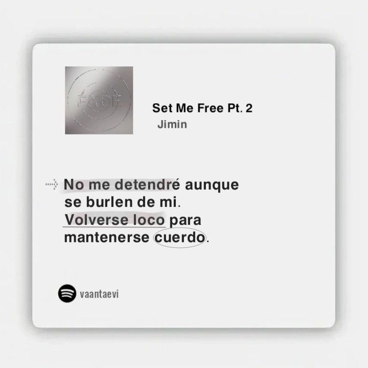
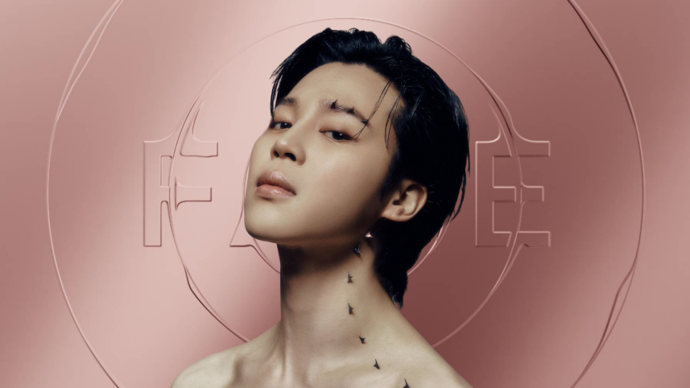

Park Jimin
Park Jimin
¿Quién es?
Park Jimin nació el 13 de octubre de 1995 en Busan, Corea del Sur, y actualmente se encuentra en sus finales de los 20. Es cantante y bailarín, reconocido por su increíble expresividad, técnica en danza contemporánea y capacidad para transmitir emociones a través de su voz y movimientos.
Su unión a BTS
Fue uno de los últimos miembros en integrarse al grupo tras audicionar con su talento en danza. Su ética de trabajo y perfeccionismo lo ayudaron a destacar rápidamente durante su entrenamiento en Big Hit Entertainment.

Trabajo solista
Canciones como “Like Crazy” y “Set Me Free Pt.2” reflejan su estilo emocional y moderno, combinando pop con elementos electrónicos y una fuerte carga expresiva.
¡Escucha su música!
Adéntrate en su mundo interior con FACE, un álbum íntimo y poderoso.
Conoce su música